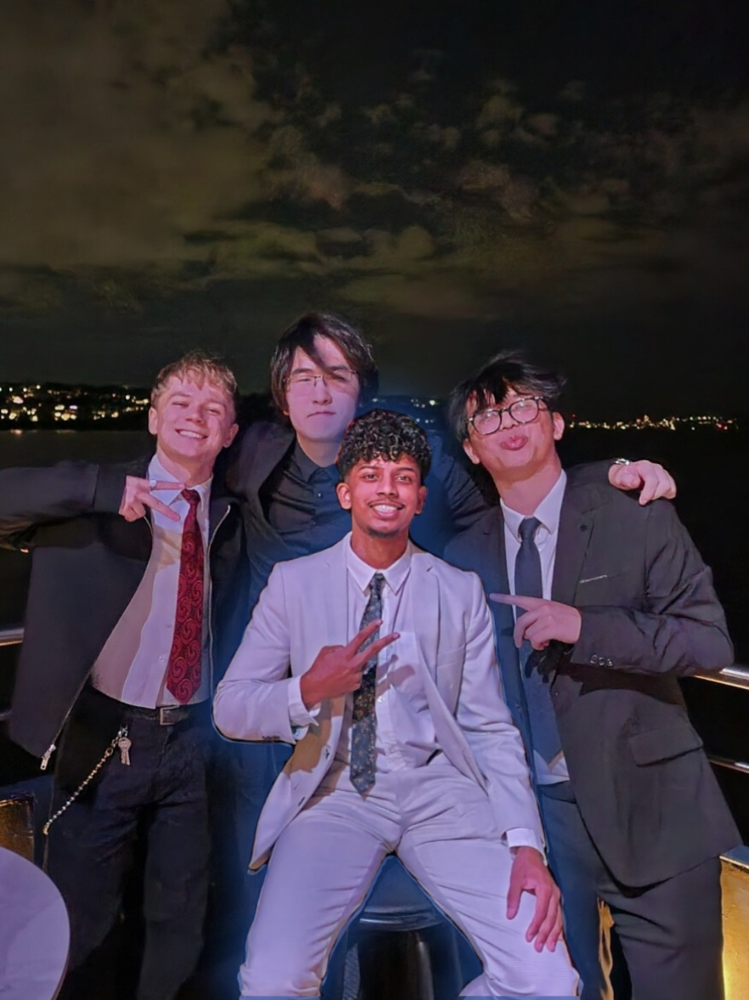
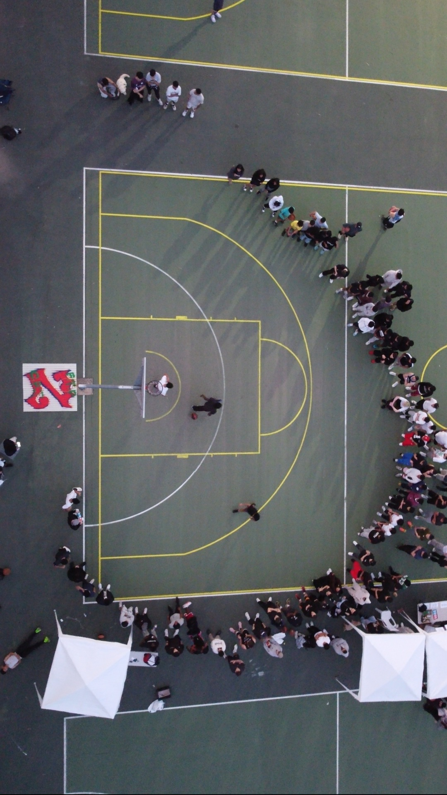
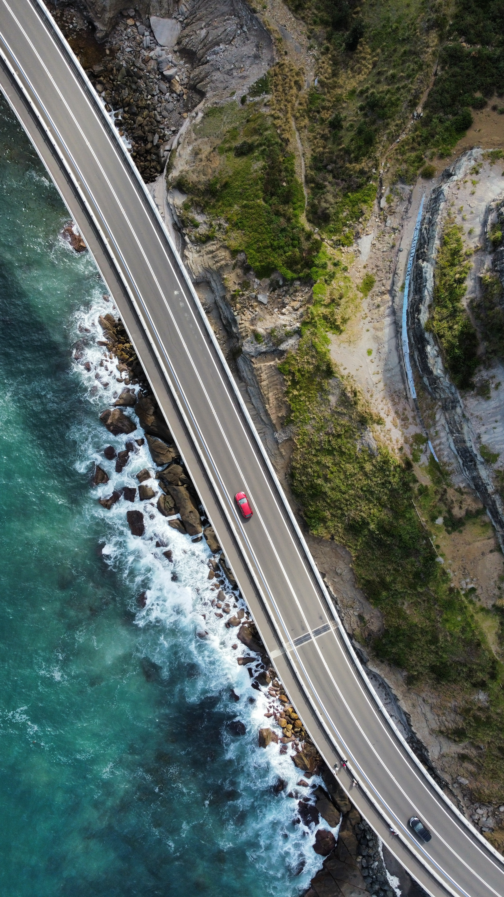

User-first foundations
I like to start with the user problem before thinking about the interface. Understanding behaviour, motivation, and friction helps me design experiences that are not only visually appealing, but actually useful and memorable.
ABOUT ME
I’m Yomal — a UX/UI designer and developer who enjoys turning ideas into polished digital experiences. My work sits between design thinking and front-end execution, with a strong focus on usability, visual hierarchy, and crafting interfaces that feel intuitive from the very first interaction.

I like to start with the user problem before thinking about the interface. Understanding behaviour, motivation, and friction helps me design experiences that are not only visually appealing, but actually useful and memorable.
Because I also work in code, I naturally think about structure, responsiveness, maintainability, and interaction behaviour while designing. I enjoy finding solutions that feel creative without becoming unrealistic to build.
I’m drawn to clean layouts, strong contrast, controlled motion, and interfaces that guide attention well. My goal is to make complexity feel simple through hierarchy, spacing, and thoughtful visual decisions.
I care about the small things — alignment, rhythm, typography, consistency, and how each screen connects to the next. I see good design as something refined over time through testing, feedback, and iteration.
Outside of design and development, I enjoy creative and personal interests that shape the way I think, observe, and build ideas.
Drone photography and videography is one of my favourite outlets. Using tools like Adobe Lightroom and Premiere Pro, I enjoy capturing landscapes from new perspectives and shaping footage into short visual stories. It’s a process that constantly improves how I think about composition, motion, and atmosphere.
I also enjoy editing videos and occasionally uploading creative projects online, alongside playing video games which sparked my early interest in technology, interaction, and digital experiences.
Beyond creative media, I’m passionate about entrepreneurship. I’m currently working with a university friend on building a construction recruitment platform, exploring how design, technology, and business can combine to solve real-world problems.
Outside the digital world, I enjoy watching Formula 1, playing tennis, practicing piano, and discovering great food — all of which keep me inspired and balanced.
A small collection of aerial work that reflects my interest in composition, perspective, atmosphere, and visual storytelling.





Feel free to reach out — whether you have a project in mind, an exciting opportunity, or simply want to connect. I’m always open to meaningful conversations around design, development, creativity, and new ideas.